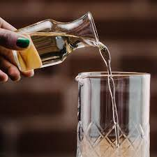

If you can boil water, you can make simple syrup. The staple cocktail sweetener more than earns
its name, consisting, simply, of equal-parts
granulated sugar and water. From there, the
variations are endless.
If you like your sweetener sweeter, you can try rich simple syrup, which ups the ratio to two parts sugar
to one part water and adds more heft to your cocktails. If plain white sugar isn’t cutting it, try demerara,
a type of raw cane sugar with a richer taste.
You can also infuse your simple syrup with countless ingredients—including spices,
herbs and fruit—based on the flavor profile you want to achieve. Looking to add
zip to your Paloma or oomph to your Old Fashioned? Steep a couple of jalapeño
slices or cinnamon sticks in your syrup. Want to give your drinks a kick of vanilla?
Vanilla simple syrup is the answer. Really into ginger? You see where this is going.
The best part? Your homemade simple syrup, once sealed and refrigerated, can live
a happy, productive life for up to a month. That’s 30 days of shaking, stirring,
blending and drinking your own homemade cocktails, from classics like the
Daiquiri to new concoctions you create on the fly. Now doesn’t that sound sweet?
